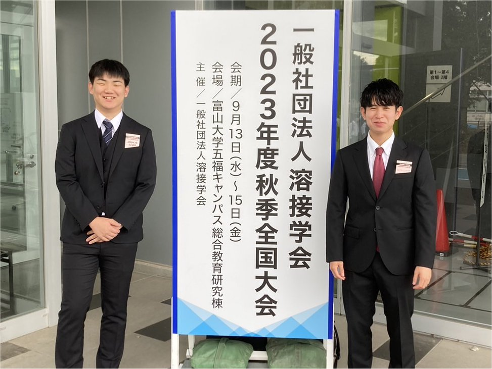
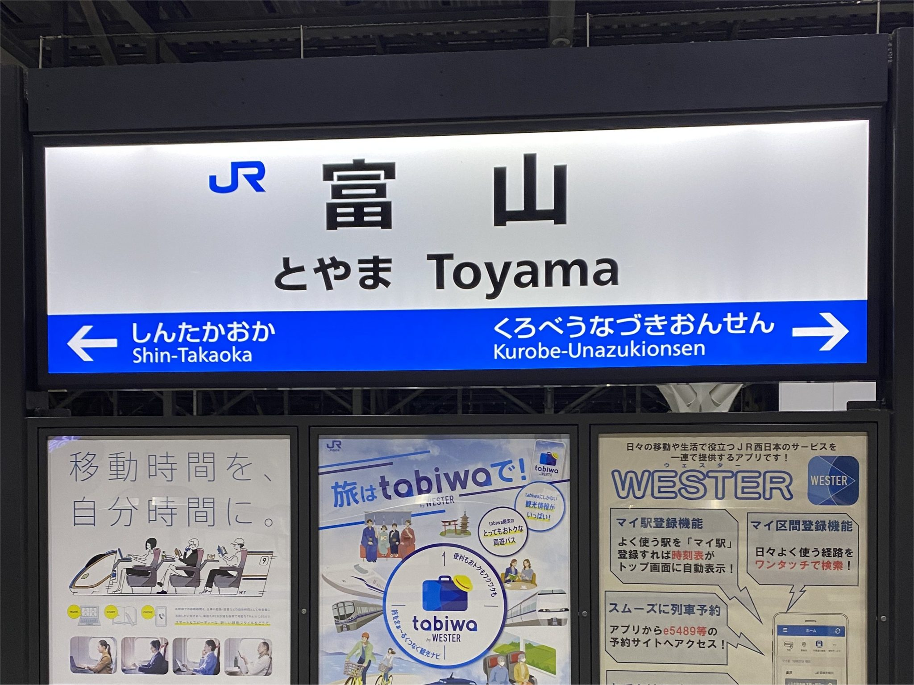
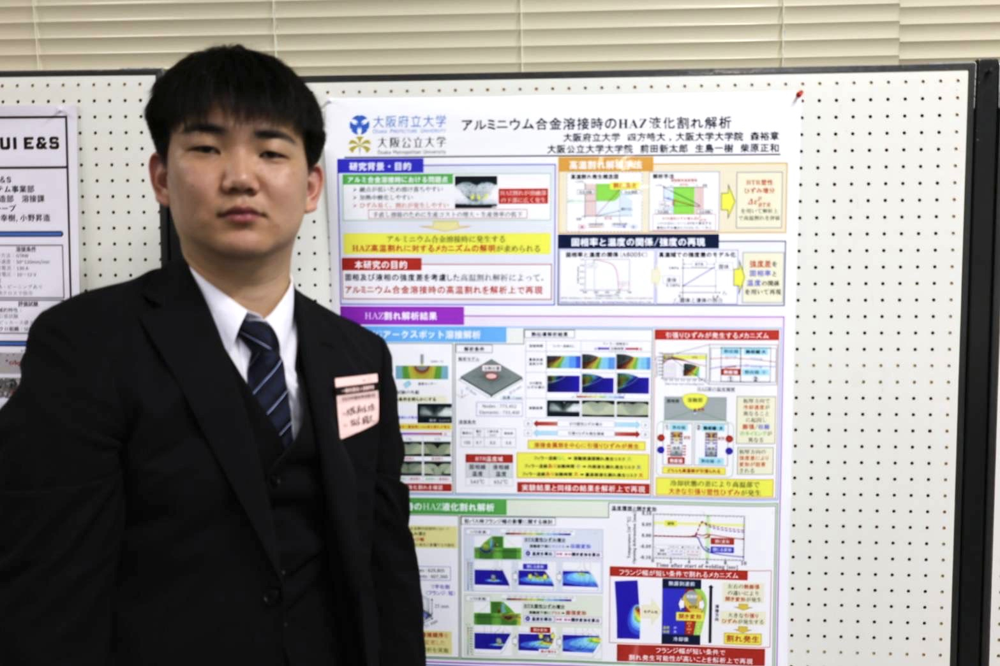

2023.09.14報告
溶接学会2023年度秋季全国大会が富山大学五福キャンパスで行われ、柴原研究室B4四方皓大さんと生島研究室M1油井達哉さんがポスター発表を行いました。
二人のポスターには多くの人が訪れ、研究内容についての活発な議論がなされました。
四方さんと油井さんの発表内容の詳細は以下の通りです。
「6000系アルミニウム合金の HAZ割れ解析」
○四方皓大、前田新太郎、森裕章、生島一樹、柴原正和
「摩擦攪拌接合時における母材およびツールの力学的状態に関する一貫解析手法の開発」
○油井達哉、前田新太郎、生島一樹、柴原正和




※大阪公立大学 柴原研究室HPより